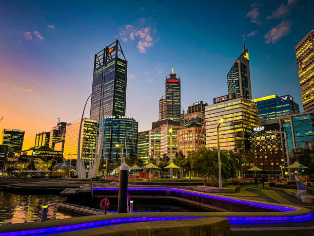

Perth, WA
Perth este capitala statului Australia de Vest și este cunoscut pentru peisajele sale naturale, clima blândă și atmosfera relaxată. Orașul este amplasat pe malul râului Swan, aproape de Oceanul Indian, ceea ce îi oferă acces la plaje spectaculoase și locuri de recreere acvatice. Perth este cel mai izolat oraș mare din lume, fiind situat la peste 2.000 de kilometri de alte mari centre urbane din Australia, ceea ce îi conferă un caracter aparte și o cultură distinctă.